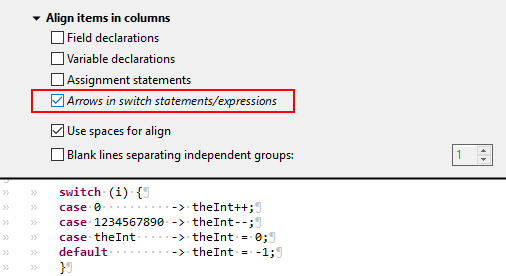

JUnit
Java Editor
A new refactoring called 'Make Static' has been added to Eclipse's Java Development Tools (JDT), which converts instance methods into static methods, when possible. This refactoring adds an extra parameter to the method declarations to handle references to instance fields, methods, or classes in the original method. Existing calls to the method are altered accordingly, and if the extra parameter is necessary, the refactoring passes 'this' or the specific instance originally used to access the method.
To apply this refactoring, the following conditions must be met:
- The method is not a constructor.
- The method does not override a method from the parent type nor is overridden in any child types.
- The type in which the method is declared is not a local type, an anonymous type, or an annotation.
The refactoring can be executed by selecting a method invocation, except in cases where a super method invocation is selected.


Java Views and Dialogs
Java Compiler
Java Formatter
